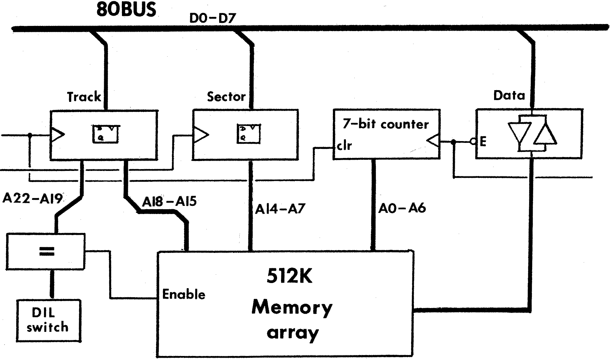

80-Bus News |
July–August 1983 · Volume 2 · Issue 4 |
| Page 36 of 55 |
|---|
(that is doing the switching!) vanishes with it. Therefore the control program has to be copied across to the same addresses in all boards in the page mode system so that it can continue to run. (An identical copy then appears in the place of the version that has just been paged out). If one of the paged memory boards is removed for any reason, the system will crash if it attempts to switch to that board as no memory will appear. Unfortunately there is no way to dynamically determine the presence or absence of a memory board in a particular page without crashing.
(Users with page-mode Memory drives may have discovered by now that they cannot Boot a CP/M system set up for a memory drive if one or more of the expected boards is absent).
The problems are not so severe if a common area of memory exists that is not paged, (e.g. the workspace RAM on a Nascom 2), as checks can be included for the presence or absence of paged (or banked) RAM.
The standard page mode supports up to four boards, giving the standard 64k of memory together with a 192k Memory disk.
This approach is neater than page mode, as the memory can be moved around (or remapped) in 4k sections, rather than the full 64k amounts. The 19 address lines defined on the 80-BUS restrict the total memory size to 512k byte, though it could always be combined with page mode to give a total of 2Mbytes.
The control software needs a little thought when moving data to ensure that there is no clash between source, destination, and the driving program. Also it has to cater for the case where a block transfer may straddle a 4k boundary (either source, destination, or both).
This finally leads me on to the concept of the Gemini RAM-DISK. Here the memory is not a system memory board, but is arranged as a block of memory separate from the 80-BUS address lines, which the CPU can only access via a few IO ports. To communicate with the memory, the CPU has to write an address to two IO ports, and then read/write data from/to another IO port.
| Page 36 of 55 |
|---|